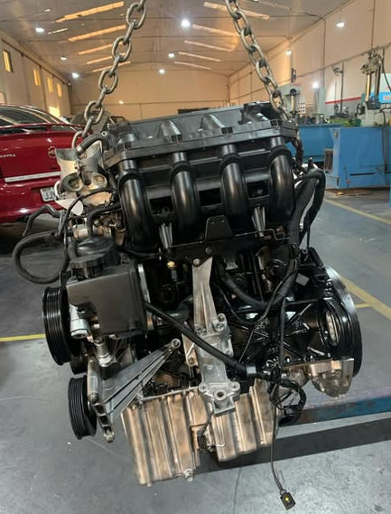
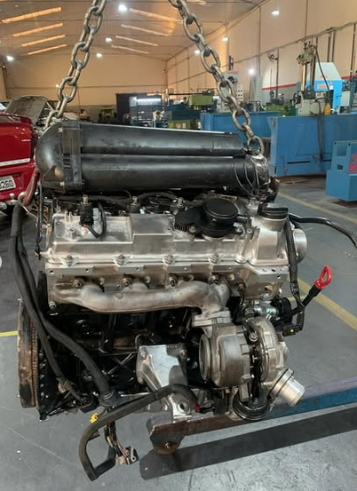
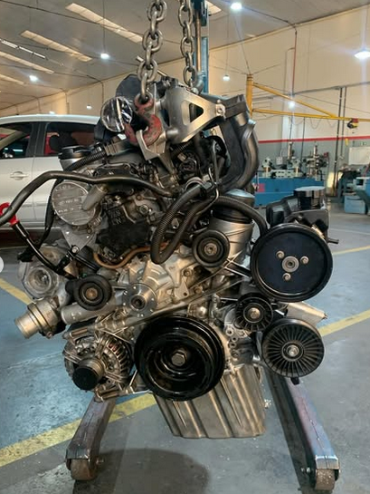
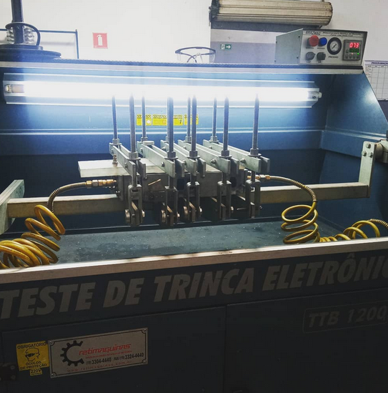
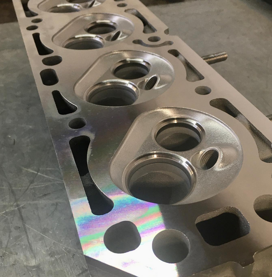
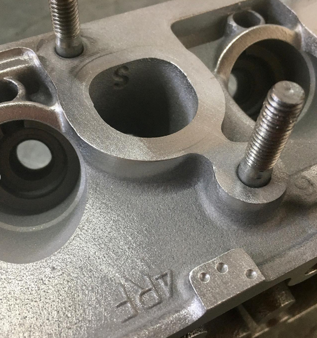

Sobre Nós
Com mais de 20 anos de atuação em Limeira/SP, a Quality Retífica de Motores é referência em retífica e manutenção de motores automotivos. Nossa equipe altamente qualificada utiliza equipamentos modernos e tecnologia de ponta para garantir precisão, qualidade e durabilidade em cada serviço realizado. Confie na nossa experiência para restaurar o desempenho original do seu motor.
Nossos Serviços
Retífica de Bloco
Retificação precisa de blocos de motor, incluindo honagem de cilindros, retificação de plainas e recuperação de dimensões originais para máxima eficiência.
Usinagem
Serviços de usinagem CNC de alta precisão para fabricação e recuperação de peças mecânicas complexas.
Tornearia
Torneamento convencional e CNC de eixos, virabrequins e componentes cilíndricos com tolerâncias milimétricas.
Fresagem
Fresagem de superfícies, calços, guias e volutas, garantindo planicidade e acabamento superior.
Retífica de Cabeçote
Retificação de cabeçotes, recondicionamento de válvulas, sedes e guias para selagem perfeita.
Alinhamento de Virabrequim
Alinhamento dinâmico e retificação de virabrequins, restaurando balanceamento e reduzemdo vibrações.
Galeria





